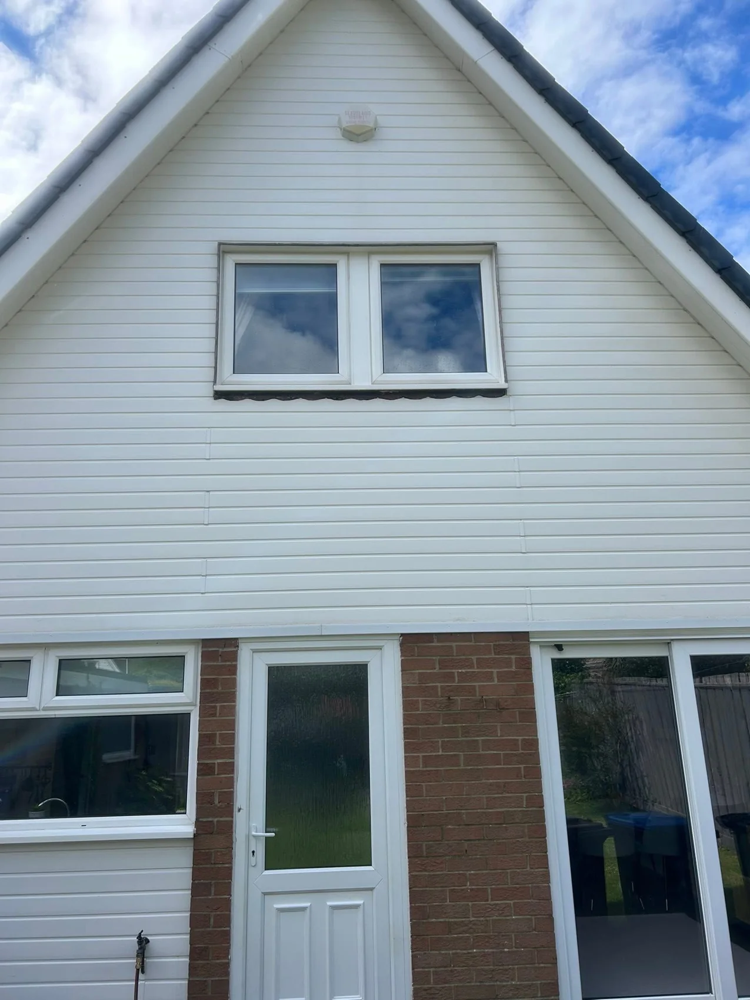
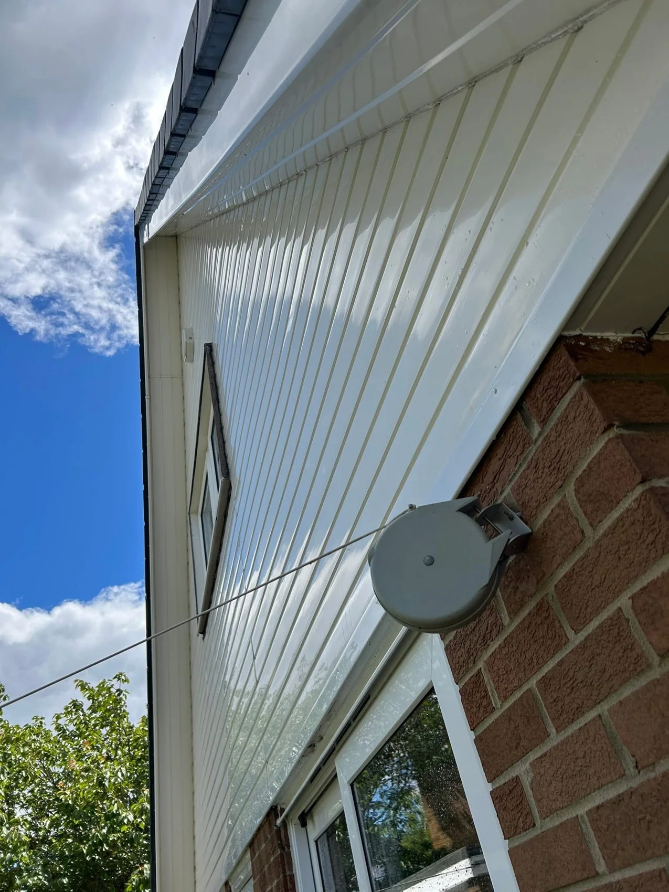
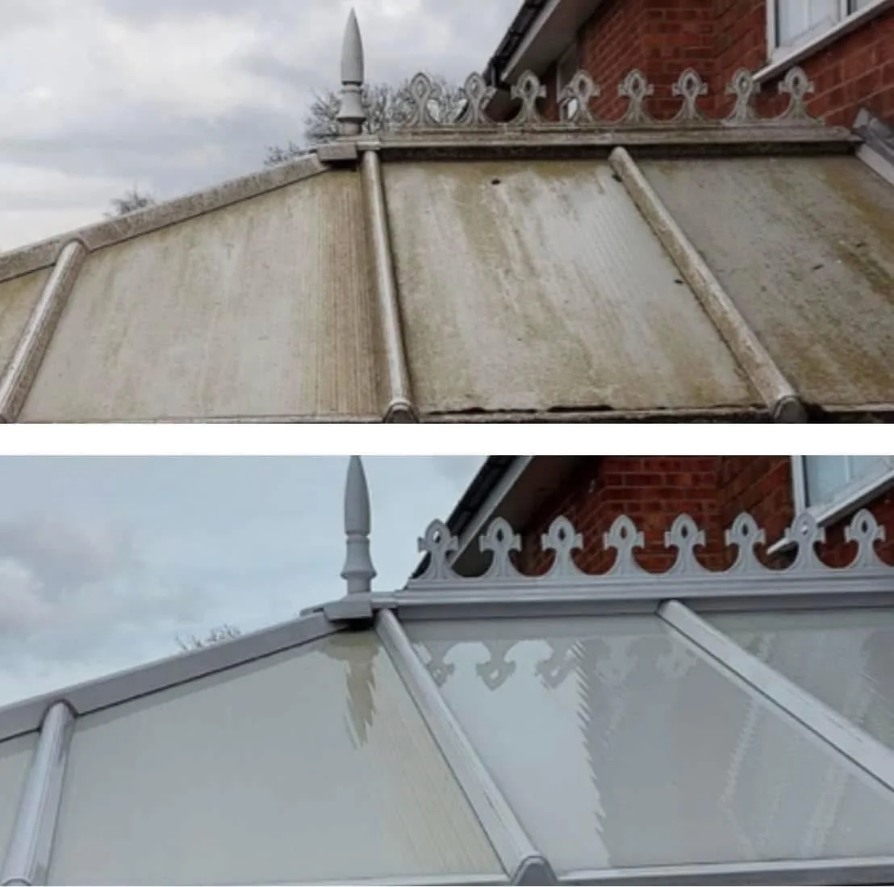
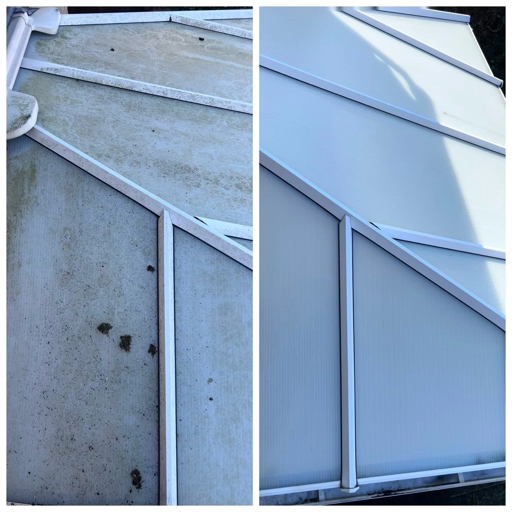
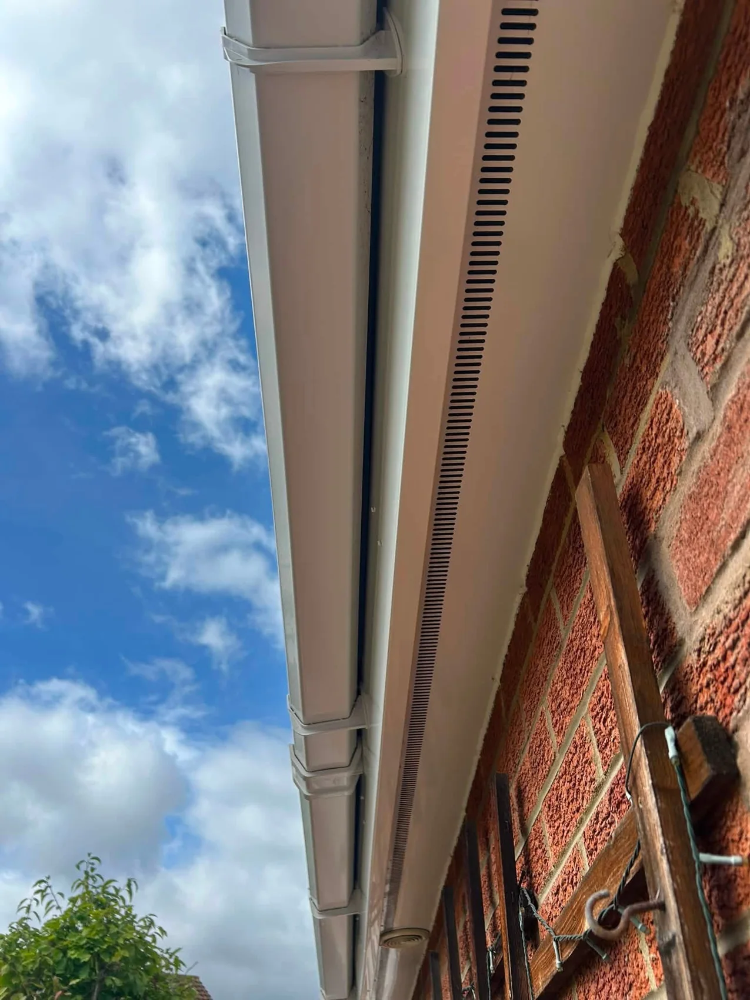
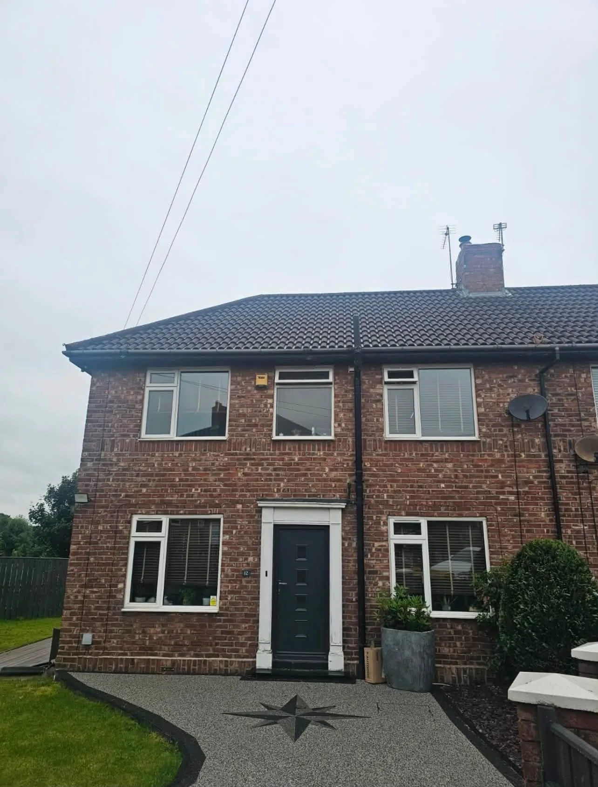
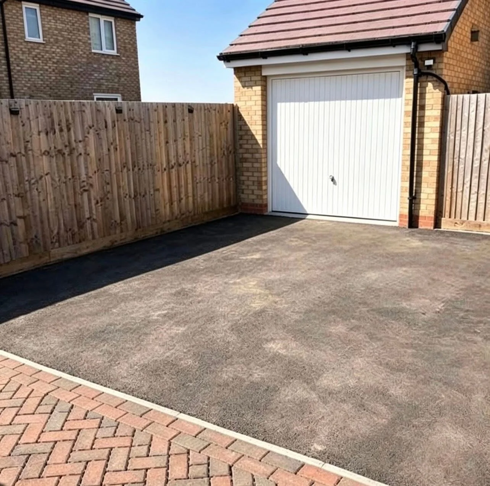
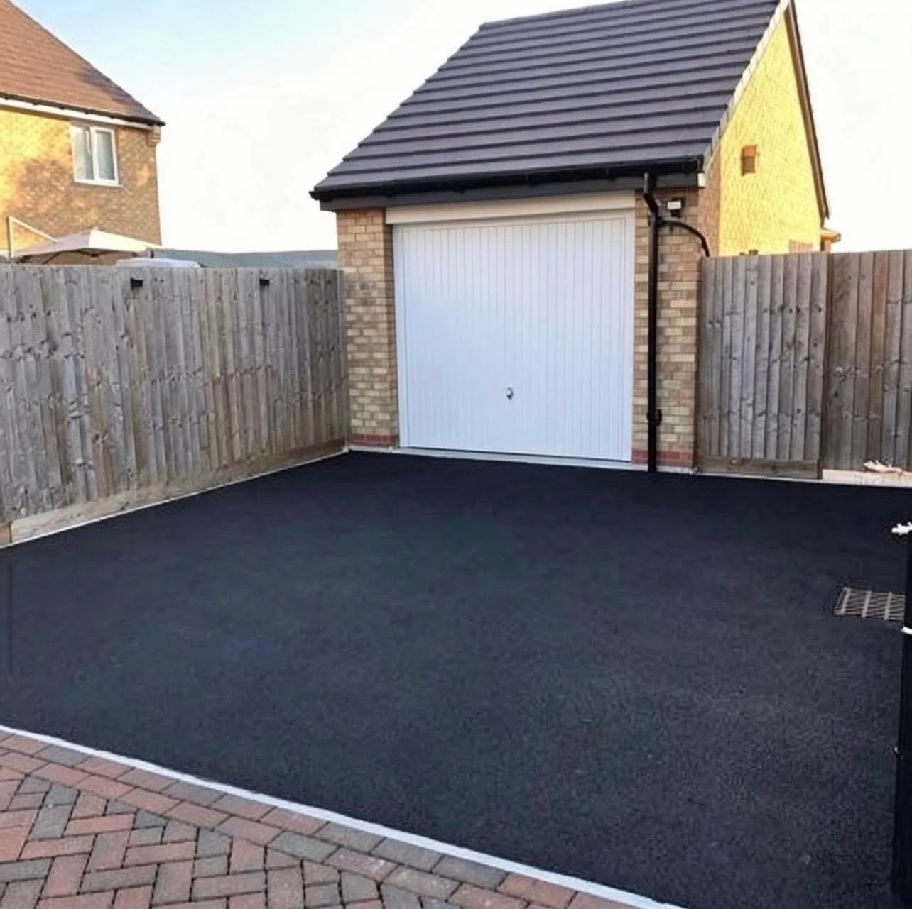

Gutter CleaningGutters vacuumed and downpipes cleared

MIDDLESBROUGH & TEESSIDE · EXTERIOR CLEANING
A cleaner, brighter home. From roofline to driveway.
Professional roof and exterior cleaning across Middlesbrough and Teesside. Fair prices, honest service and a finish you can see.
Fully InsuredGutter CleaningRoof CleaningExterior Cleaning
Roof CleaningRoof cleaning and suitable soft washing
Pressure WashingDriveways, outdoor surfaces and graffiti removal
Windows & ConservatoriesWindows, roof panels, frames and exterior detailing
PROFESSIONAL EXTERIOR CLEANING
Care for your home. Right down to the details.
TrueClean provides roof and exterior cleaning across Middlesbrough, Teesside and surrounding areas. From blocked gutters to tired fascias and conservatory roofs, we help give your home a cleaner, brighter exterior.
Request a quote →

CONSERVATORY CLEANING
Let the light back in.
Dirt and weathering can dull a conservatory roof and its frames. These real before and after photographs show the difference a thorough clean can make.
Discuss your clean →

RECENT WORK
Real work. Clear results.
A selection of TrueClean’s exterior cleaning work.




BEFORE & AFTER
A driveway transformed. The difference is clear.
The same driveway, before and after. A cleaner surface gives the whole entrance a fresher, more cared-for appearance.
Request your cleaning quote →

EXTERIOR CLEANING IN TEESSIDE
A local service that cares about the finish.
TrueClean works across Middlesbrough, Teesside and surrounding areas, offering gutter cleaning, roof cleaning, pressure washing, graffiti removal, window cleaning and exterior detailing.
01
Honest service
A straightforward conversation about your property and what needs cleaning.
02
Careful exterior cleaning
Gutters, rooflines, conservatories and outdoor surfaces receive attention to the details.
03
Visible results
The real job photographs show cleaner panels, brighter rooflines and refreshed outdoor surfaces.
REQUEST A QUOTE
Tell TrueClean what needs cleaning.
Complete the form and it will open WhatsApp with your project details ready to send. This is a quote request, not a confirmed booking.
TRUECLEAN
Ready for a cleaner exterior?
Middlesbrough, Teesside & surrounding areas